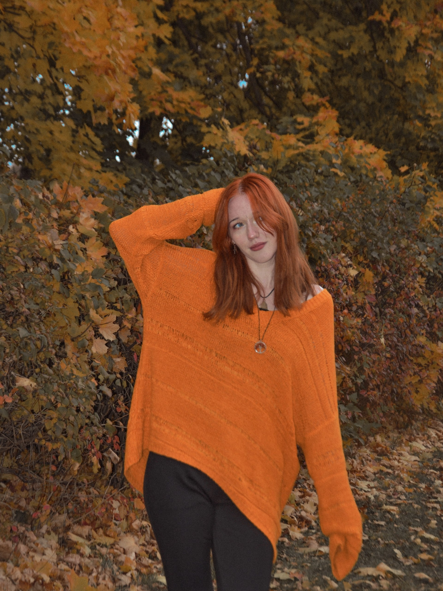
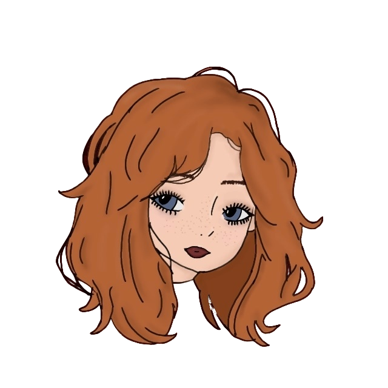

Собираю
моменты в кадр
Музыка, цветные щёки, чьи-то влюблённые взгляды — всё, от чего внутри становится чуточку теплее.
✳

это я!
фото-дневник человека за камерой
↓
листаем вниз ↓
МОЯ КАМЕРА ВИДЕЛА
ЖИЗНЬ, КАКАЯ
ЖИЗНЬ, КАКАЯ
ОНА ЕСТЬ
когда громко ✳когда ярко ✳когда вы вдвоём ✳

НЕМНОГО ПРО МЕНЯ
рыжая.
рыжая.
любопытная.
с камерой.
какой-то текст йоу, я Надечка люблю фоткать. Люблю ловить людей настоящими и сохранять то, что хочется пережить ещё раз. ляляляляля